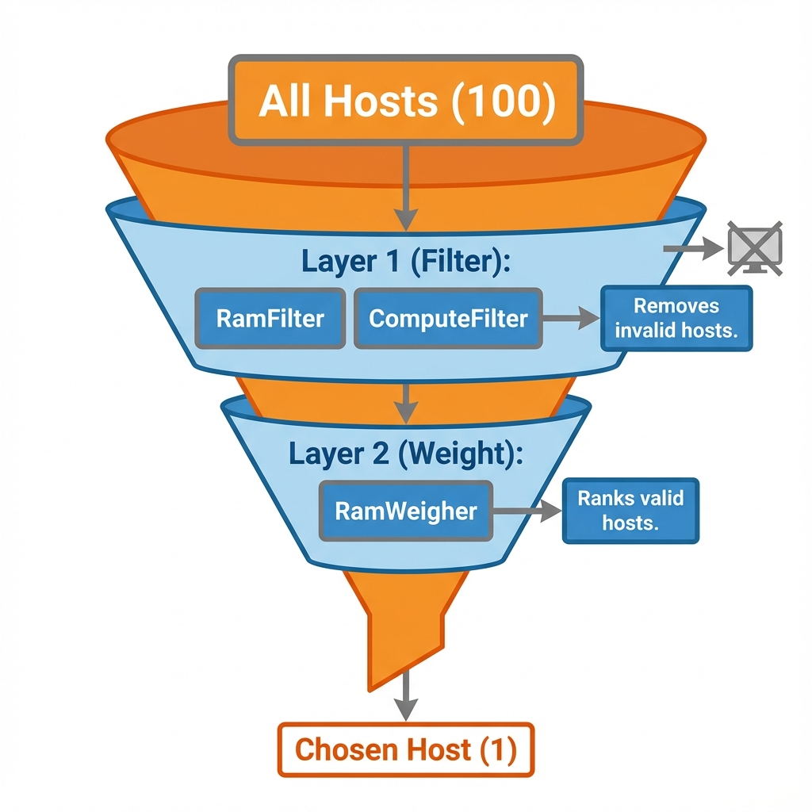
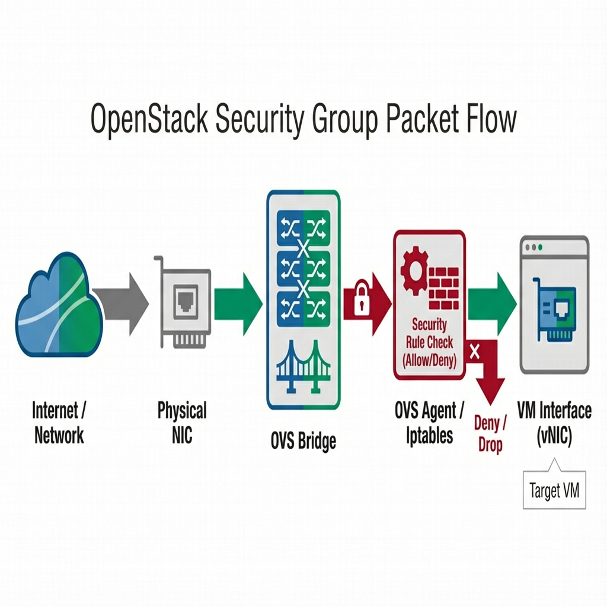

Compute Operations (Nova platform compute service for VMs )
Student NotesCourse: Computer Systems Engineering Module: Operating Systems 3 (Virtualisation & Cloud Technologies) Topic: Compute Operations (NovaOpenStack compute service for VMs platform compute service for VMs ) Estimated Reading Time: 30 Minutes
[!TIP] How to succeed in this week: NovaOpenStack compute service for VMs platform compute service for VMs is the compute engine—focus on understanding the scheduling process and instance lifecycle. The CLICommand Line Interface commands build on Week 8's foundation, so review KeystoneOpenStack identity/authentication service platform identity/authentication service , GlanceOpenStack image service platform image service , and NeutronOpenStack networking service platform networking service concepts if needed.
1. Introduction to OpenStack platform Compute (Nova platform compute service for VMs )
In Week 7, we introduced the core services that make up an OpenStack platform cloud. This week, we tear apart the engine to understand the most critical component: Nova platform compute service for VMs . As the primary computing controller, Nova platform compute service for VMs is responsible for orchestrating, scheduling, and managing the lifecycle of virtual machines.
Industry Context: To be technically precise, Nova platform compute service for VMs is the Compute Resource Provider.
- In Azure, you submit a template - image for quick deployment to the Azure Resource Manager (ARM), which routes the request to the
Microsoft.Computeprovider to execute the build. - In OpenStack platform , Nova platform compute service for VMs plays the role of
Microsoft.Compute. It is the backend service that accepts the request and orchestrates the hypervisors. - Therefore, do not confuse Nova platform compute service for VMs (the Manager) with the VM - (the Resource). Nova platform compute service for VMs creates the VM - .
It is important to clarify that Nova platform compute service for VMs does not provide the virtualization itself; that task remains the job of the Hypervisor, such as KVM - Type 1 hypervisor or QEMU - Type 1 hypervisor for virtualization . Instead, Nova platform compute service for VMs acts as the management layer that allows administrators to scale this virtualization across thousands of physical servers seamlessly.
Modern Nova platform compute service for VMs utilizes a Cellular Architecture to achieve this massive scale. In early versions of OpenStack platform , a single central database and message queue handled every request in the cloud. However, as clusters grew to tens of thousands of nodes, the database lock contention became a severe bottleneck. The solution was to partition the cloud into "Cells." In this model, the API and Scheduler remain at the global level, but the Compute nodes are grouped into independent cells, each with its own database and message queue. This implies that if "Cell 1" suffers a critical database failure, "Cell 2" continues to operate without interruption, effectively partitioning the cloud to isolate failures and improve resilience.
Section 1 Checkpoint
Summary:
- Nova platform compute service for VMs is the compute controller, equivalent to
Microsoft.Compute. - Cellular Architecture: Partitions the cloud for scalability and resilience.
- Hypervisor Agnostic: Nova platform compute service for VMs manages the hypervisor (KVM - Type 1 hypervisor ) but is not the hypervisor itself.
Reflection:
- Why does Nova platform compute service for VMs need a "Cellular Architecture" for large-scale clouds?
- What is the difference between Nova platform compute service for VMs and KVM - Type 1 hypervisor ?
2. Nova platform compute service for VMs Component Anatomy
Nova platform compute service for VMs is not a single monolithic program but a distributed system comprised of several communicating daemons, each with a specific role. These are generally divided into the Control Plane (Global Management) and the Data Plane (Node Execution).
 Figure 1: Nova platform compute service for VMs Architecture - The flow from API (Entrance) to Scheduler (Brain) to Compute (Worker)
Figure 1: Nova platform compute service for VMs Architecture - The flow from API (Entrance) to Scheduler (Brain) to Compute (Worker)
2.1 The Global Components (Control Plane)
The entry point for all requests is nova platform compute service for VMs -api. This service accepts REST requests from users and other services. It first validates the user's authentication token via Keystone platform identity/authentication service before passing the request into the system. Crucially, nova-api is stateless, meaning scaling it is as simple as running multiple copies behind a Load Balancer.
The decision-making heart of the cloud is nova platform compute service for VMs -scheduler. Its sole responsibility is to decide where a new virtual machine should be placed. It does not create the VM - or touch the hypervisor; it simply selects the most appropriate host from the pool of available resources and passes the message along. It achieves this through a sophisticated Filter-and-Weight algorithm.
Finally, the nova platform compute service for VMs -conductor acts as a security guard for the database. In a cloud environment, compute nodes are considered "untrusted" because they run user workloads that could potentially be malicious. If a hacker were to escape a VM - and gain control of the compute node, we must ensure they cannot corrupt the entire cloud database. Therefore, compute nodes are not allowed to write to the database directly. Instead, they send a message to the Conductor requesting an update, and the Conductor performs the write operation only after validating the request.
2.2 The Node Components (Data Plane)
On every hypervisor server, the nova platform compute service for VMs -compute service acts as the worker. It continually listens for instructions from the message queue (RabbitMQ). When it receives a command, such as "Run Instance," it does not execute it blindly; it follows a rigorous process to ensure the VM - is built correctly on the physical hardware.
The Driver Layer (Libvirt)
nova-compute is designed to be hypervisor-agnostic. It does not speak directly to the kernel; instead, it uses a driver. In our Linux environment, it uses the Libvirt driver. When you ask for a VM - , nova-compute translates your request into a Libvirt XML file—a precise recipe describing the VM - 's CPU, RAM, and Devices—and passes it to the Libvirt daemon, which ultimately spawns the QEMU - Type 1 hypervisor for virtualization /KVM - Type 1 hypervisor process.
The Resource Tracker
Beyond creating VMs, nova-compute is responsible for auditing the physical server. It runs a periodic task (typically every 60 seconds) called the Resource Tracker. This task scans the available RAM, CPU cores, and Disk space on the host and compares it against the reserved resources. It then reports this "Inventory" back to the central database. This ensures that the Scheduler always possesses an accurate, up-to-date map of the cloud's capacity, preventing it from sending a VM - to a host that is already full.
Section 2 Checkpoint
Summary:
- Control Plane:
nova-api(Entry),nova-scheduler(Decision),nova-conductor(DB Guard). - Data Plane:
nova-compute(Hypervisor Worker). - Security: Compute nodes cannot talk directly to the DB; they go through Conductor.
Reflection:
- Why is
nova-apiconsidered "stateless"? - Why do we need a "Conductor" to protect the database?
3. The Scheduling Algorithm (The Decision Process)
When a user requests a new VM - , the scheduler is faced with the task of choosing one single server out of potentially thousands. It solves this problem using a two-pass process: Filtering and Weighting.
 Figure 2: The Scheduling Funnel - Narrowing down 1000 hosts to the single best candidate
3.1 Pass 1: Filtering (Qualifying)
The first pass is designed to remove any hosts that are incapable of running the instance. It works like a sieve.
- RamFilter: Checks if the host has enough free RAM to satisfy the requested flavor - template - image for quick deployment defining vCPUs, RAM, and disk .
- ComputeFilter: Ensures the host service is actually alive and reporting.
- AvailabilityZoneFilter: Ensures the VM - lands in the requested physical location.
- ImagePropertiesFilter: Checks for specific hardware requirements like GPUs or Secure Boot support.
3.2 Pass 2: Weighting (Ranking)
Once the invalid hosts are removed, the second pass ranks the remaining candidates to find the "best" fit. The default RamWeigher checks the free RAM on each host.
- Stacking Strategy: Fills up one server completely before moving to the next. This saves power but creates hotspots.
- Spreading Strategy (Default): Places the VM - on the emptiest possible server to maximize performance and minimize the "noisy neighbor" effect.
Section 3 Checkpoint
Summary:
- Filtering: Removes invalid hosts (e.g., Not enough RAM).
- Weighting: Ranks valid hosts (e.g., Emptiest first).
- Goal: Select the single best host (Candidate) for the VM - .
Reflection:
- What is the difference between "Stacking" and "Spreading" strategies?
- Which filter ensures a VM - lands on a host with a GPU?
4. The Instance Lifecycle (State Machine)
A Virtual Machine goes through several status changes during its life. Understanding these transitions is critical for troubleshooting when things go wrong.
The process begins in the BUILD state. Initially, the API has accepted the request, but the VM - does not exist yet; the Scheduler is still finding a home for it. The state remains BUILD while the Conductor waits for Neutron platform networking service to assign an IP address and Port (Networking phase). It then transitions to the Spawning phase, where nova-compute downloads the disk image from Glance platform image service .
If all goes well, the status changes to ACTIVE, meaning the Hypervisor considers the VM - process to be running successfully. If a failure occurs at any point, the status will change to ERROR, and the administrator must check the nova-compute.log to determine the cause. Other states include SHELVED, where the VM - is written to disk and removed from RAM to save resources (a "Deep Freeze"), and RESCUE, where the VM - is booted from a special recovery image to repair a corrupted disk.
Section 4 Checkpoint
Summary:
- BUILD: Scheduling and Networking in progress.
- ACTIVE: VM - is running on the Hypervisor.
- ERROR: Something went wrong (Check logs).
- SHELVED: VM - offloaded to disk.
Reflection:
- What happens during the "Spawning" phase?
- How does SHELVED differ from a simple Shutdown?
5. Operations Cookbook (CLI): Launching Nebula Inc.
In Week 8, we established the digital foundation for Nebula Inc. We created the Project (nebula_prod), hired the User (nebula_admin), and wired the Office Network (nebula_net). However, the data center currently sits empty. To bring the company online, we must now define the virtual hardware standards (Flavors), issue security credentials (Keys & Groups), and finally press the "Power On" button for their first Web Server.
Below are the commands to execute this activation.
5.1 Defining Flavors (Capacity)
In a physical data center, you buy specific server models. In OpenStack platform , we abstract this capacity into what the platform calls Flavors (Instance Types in AWS/Azure). A Flavor - template - image for quick deployment defining vCPUs, RAM, and disk is a virtual hardware template - image for quick deployment that defines the resource limits (vCPU - , RAM, Disk).
The Provider vs. Consumer Role:
- Public Cloud (AWS/Azure): You are a Consumer. You cannot create new sizes; you can only Select from the menu Amazon provides (
t2.micro,m5.large). - Private Cloud (OpenStack platform ): You are the Provider. It is your job to Create the menu that your users will select from.
1. Listing Existing Flavors (The Menu) Before creating new ones, check what is available.
openstack flavor list
2. Creating a Custom Flavor - template - image for quick deployment defining vCPUs, RAM, and disk (The Chef)
For "Nebula Inc.", we need a custom "Micro" size for cheap testing. We will name it m1.nebula_micro.
Naming Convention Decoding:
m1: Generation/Class. (e.g., "m" for General Purpose, "1" for 1st Generation). This mirrors AWS naming (e.g.,t2.micro= Burstable, 2nd Gen).nebula: Family. Identifies this as a custom flavor - template - image for quick deployment defining vCPUs, RAM, and disk for our organization.micro: Size. Indicates relative capacity (Micro < Small < Medium).
openstack flavor create --id auto --ram 512 --disk 1 --vcpus 1 m1.nebula_micro
- Result: We have added a new item to the menu. Users can now select
m1.nebula_microwhen launching instances.
5.2 Securing Access (Keys & Groups)
Security in the cloud is a two-layered approach. First, we must secure Identity (proving who you are) using Keypairs. Second, we must secure the Network (controlling traffic flow) using Security Groups. You cannot access a VM - unless both of these layers are correctly configured.
5.2.1 Keypairs (Login Access)
Unlike traditional servers where you set a root password, Cloud images (AWS, Azure, OpenStack platform ) verify identity using Asymmetric Cryptography. This mechanism leverages a "Lock and Key" relationship to secure access. The Public Key acts as the "Lock"; you upload this to the cloud, and Nova platform compute service for VMs injects it into the VM - 's .ssh/authorized_keys file during boot. It is safe to share and visible to anyone. The Private Key acts as the unique "Key"; you keep this securely on your laptop and must never share it. When you attempt to SSH into the instance, the server sends a digital challenge encrypted with the Lock. Your laptop automatically uses your Private Key to decrypt this challenge. If the decryption is successful, the server grants access without ever requiring a password to be transmitted over the network.
Generating a Keypair
openstack keypair create nebula_key > nebula_key.pem
chmod 600 nebula_key.pem
- Explanation: This command generates the pair. It stores the Public Key in the Nova platform compute service for VMs Database and writes the Private Key to
nebula_key.pemon your disk. Thechmodis critical; SSH will refuse to use a key if the file permissions are too open.
5.2.2 Security Groups (The Virtual Firewall)
In traditional networking, firewalls are physical appliances sitting at the edge of the network. In Cloud Computing, we use Security Groups. A Security Group is a virtual firewall that is applied directly to the network interface (vNIC) of an instance, regardless of where it runs in the data center.
 Figure 3: Security Group Architecture - How the Open vSwitch Agent filters packets on the Hypervisor before they reach the VM -
Concept (General Cloud) Security groups operate on specific principles:
- Stateful: If you allow a request out (e.g., download update), the return traffic is automatically allowed in.
- Allow-List: The default policy is "Implicit Deny". All traffic is blocked until you explicitly allow it.
- Dynamic: Rules are applied immediately to all running instances without rebooting.
OpenStack platform Implementation When you create a rule, Neutron platform networking service communicates with the Open vSwitch (OVS) agent on the Compute Node. It translates your high-level rule (e.g., "Allow Port 80") into low-level OVS Flow Tables or iptables chains on the physical hypervisor. This ensures malicious traffic is dropped on the physical wire before it ever reaches your VM - , providing a robust first line of defense.
CLI: Configuring the Firewall We must explicitly open ports for SSH and Web access.
# Create the Container
openstack security group create nebula_web_sg
# Allow SSH (Port 22) - Administrative Access
openstack security group rule create --proto tcp --dst-port 22 nebula_web_sg
# Allow HTTP (Port 80) - Public Web Access
openstack security group rule create --proto tcp --dst-port 80 nebula_web_sg
- Result: The OVS Agent on the compute node intercepts traffic to
nebula_web_01and filters it against these rules.
5.3 Launching Instances
The server create command brings together the Flavor - template - image for quick deployment defining vCPUs, RAM, and disk , Image, Network, Key, and Security Group to instantiate a VM - .
Boot Command
openstack server create --flavor m1.nebula_micro \
--image nebula_standard_os \
--network nebula_net \
--key-name nebula_key \
--security-group nebula_web_sg \
nebula_web_01
- Explanation:
--flavor: Defines the size.--image: Defines the software (OS).--network: Defines the wiring.- Result: Triggers the entire scheduling and build process seen in Section 4.
5.4 Day 2 Operations (Debugging & Access)
Floating IPs (Public Access) To access the VM - from the internet, map a public IP to it.
openstack floating ip create public
openstack server add floating ip nebula_web_01 172.24.4.10
Console Logs (Troubleshooting) If a VM - fails to become reachable (e.g., no network), check the boot logs.
openstack console log show nebula_web_01
- Explanation: Retrieves the kernel ring buffer (dmesg) and cloud-init output directly from the hypervisor. Use this to find kernel panics or DHCP failures.
Section 5 Checkpoint
Summary:
- Flavor - template - image for quick deployment defining vCPUs, RAM, and disk : Virtual hardware template - image for quick deployment (CPU/RAM). Provider defines, Consumer selects.
- Security Group: Stateful virtual firewall. "Implicit Deny" by default.
- Keypairs: SSH Keys for identity. Private Key never leaves your laptop.
- Floating IP: Assigns a public address to reach the VM - from outside.
Reflection:
- Why must we use
chmod 600on the private key? - How does an "Allow-List" firewall differ from a traditional "Block-List"?
6. Industry Comparison: The "Polyglot" Cloud Engineer
A key goal of this course is to make you a Cloud Engineer, not just an OpenStack platform Administrator. The concepts you learned this week—Flavors, Security Groups, and Booting Instances—are universal. If you know how to launch a server in OpenStack platform , you already know 90% of how to do it in Amazon Web Services (AWS) or Microsoft Azure.
6.1 Concept Mapping
| Concept | OpenStack platform Term | AWS Term | Azure Term |
|---|---|---|---|
| Compute Provider | Nova platform compute service for VMs | EC2 (Service) | Azure Compute (Microsoft.Compute) |
| Size Template - image for quick deployment | Flavor - template - image for quick deployment defining vCPUs, RAM, and disk (e.g., m1.small) |
Instance Type (e.g., t2.micro) |
VM - Size (e.g., Standard_B1s) |
| Firewall | Security Group | Security Group | Network Security Group (NSG) |
| Login Key | Keypair | Key Pair | SSH Key |
| Default User | cirros, ubuntu |
ec2-user, ubuntu |
azureuser |
| ### 6.2 CLI Rosetta Stone | |||
| Below is the exact same "Launch Instance" workflow translated into the three major languages of the cloud. |
1. Create a "Flavor - template - image for quick deployment defining vCPUs, RAM, and disk " (Size)
- OpenStack platform :
openstack flavor list(Selectsm1.small) - AWS:
aws ec2 describe-instance-types(Selectst2.micro) - Azure:
az vm list-sizes(SelectsStandard_B1s)
2. Create a Firewall
- OpenStack platform :
openstack security group create web-sg - AWS:
aws ec2 create-security-group --group-name web-sg - Azure:
az network nsg create --name web-nsg
3. Launch the Instance (The "Hello World" of Cloud) Notice how similar the flags are across all three platforms.
OpenStack platform (Nova platform compute service for VMs )
openstack server create --image ubuntu --flavor m1.small --key-name mykey --security-group web-sg my-server
AWS (EC2)
aws ec2 run-instances --image-id ami-12345 --instance-type t2.micro --key-name mykey --security-group-ids sg-12345
Azure (Compute)
az vm create --image UbuntuLTS --size Standard_B1s --ssh-key-value @mykey.pub --nsg web-nsg --name my-server
Section 6 Checkpoint
Summary:
- Concepts are universal; only terms change (Flavor - template - image for quick deployment defining vCPUs, RAM, and disk -> Instance Type).
- Nova platform compute service for VMs = AWS EC2 = Azure Compute.
- Security Group is the standard term across OpenStack platform and AWS.
Reflection:
- Why is it valuable to learn the underlying concept rather than just the tool command?
- How does rely on these standardized CLI commands?
7. Summary and Next Steps
This week we peeled back the layers of the OpenStack platform cloud to reveal Nova platform compute service for VMs , the engine responsible for "Computing." We moved from the high-level architecture of Cells and Schedulers down to the practical reality of launching instances via the CLI. You learned that a "VM is not just a random occurrence but the result of a coordinated effort between the API (Entry), Scheduler (Brain), Conductor (Guard), and Compute (Worker).
We also took our first steps in "Nebula Inc." by defining the hardware standards (Flavors) and security policies (Groups) necessary to bring the company online. By mapping these OpenStack platform concepts to their AWS and Azure equivalents, you are effectively learning three clouds simultaneously.
Preparing for Week 10
Next week, we tackle Storage and Persistence. A web server is useless if it loses all its data when it reboots. We will explore Cinder platform block storage service (Block Storage) to give our instances persistent hard drives.
Checklist:
- Ensure you can launch an instance from the CLI without looking at the manual.
- Verify you can SSH into your instance using your keypair.
- Review the "Instance Lifecycle" states (Build -> Active).
8. Additional Resources
OpenStack platform (The Platform)
AWS (The Comparison)
Azure (The Comparison)
9. Lab Exercises
- Lab 1: Launch
- Goal: Launching your first Cloud Instances.
- Lab 2: Lifecycle
- Goal: Managing instance lifecycle (Suspend, Resume, Resize).
Test Your Knowledge
Ready to check your understanding of this week's material? Take the interactive quiz now!
Start Quiz